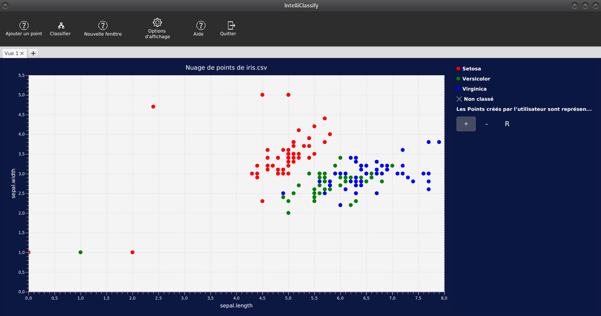
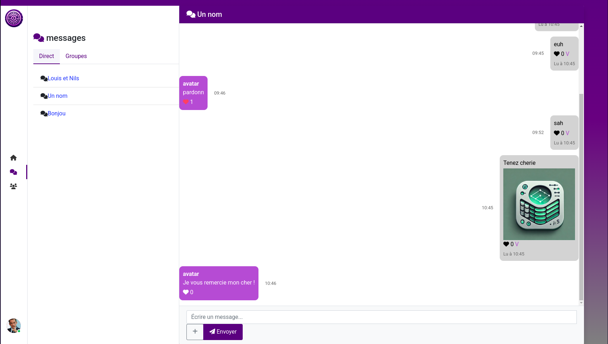
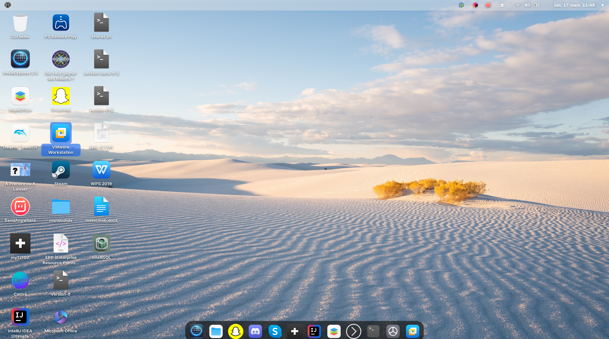

Je m'appelle Nils Vanderschooten-Akinmoladun, j’ai 19 ans et je suis étudiant en deuxième année de BUT Informatique à l’Université de Lille. Passionné par le développement et les technologies, je travaille sur des projets variés en Java, C++, SQL, HTML et CSS.
Mon parcours inclut des stages en support technique et vente, qui m’ont permis de développer une grande adaptabilité, ainsi que des projets universitaires enrichissants. Le football, que je pratique à l’US Lesquin, occupe une place importante dans ma vie, tout comme mes passions pour les jeux vidéo, l’automobile et le multimédia, qui inspirent mes créations.
Curieux et motivé, je recherche des opportunités pour approfondir mes compétences et contribuer à des projets innovants.
Réalisation de projets dans le domaine des infrastructures et des télécommunications.
Réalisé avec un binôme
À l’Institut Universitaire de Technologie de Wildau
Stage HelpDesk - Camaïeu
Avril 2022 (1 semaine)
Assistance aux utilisateurs et résolution de problèmes techniques.
Support client
Gestion des incidents
Mini-job en vente - Micromania Leers
2021
Vente, conseil client et gestion des stocks.
Service client
Organisation
Stage de 3ème - Emaho Roubaix
2020
Conception sonore et numérique.
Création de contenu numérique
Techniques de conception sonore
Réalisations
Titre
Année
Actions
Application JavaFX de Gestion de Trajets
2024
Résumé du projet :Développement d’une application JavaFX pour optimiser des trajets en temps réel à l’aide de graphes. Elle offre une interface intuitive pour visualiser et gérer les itinéraires, réalisée en équipe de trois.
Compétences techniques acquises :
Programmation en JavaFX
Utilisation de graphes pour l’optimisation
Conception d’interfaces utilisateur
Savoir-être acquis :
Travail en équipe
Gestion de projet
Communication
Jeu "Qui veut gagner des Millions" en Python
2024
Résumé du projet :Création d’un jeu en Python inspiré de "Qui veut gagner des Millions", avec un contrôleur complet, une gestion des scores et des paliers. Projet personnel visant à simuler une expérience télévisée interactive.
Compétences techniques acquises :
Programmation en Python
Gestion des entrées/sorties
Conception de logique de jeu
Savoir-être acquis :
Autonomie
Créativité
Planification
Application IntelliClassify
2024

Résumé du projet :Développement d’un outil de chargement et d’affichage de données CSV, avec classification supervisée via l’algorithme KNN. L’application permet de visualiser des nuages de points, de sélectionner des attributs, de choisir une catégorie et de classer de nouvelles données avec des distances (euclidienne, Manhattan) et des pondérations ajustables. Réalisé en groupe de quatre.
Résumé du projet :Mise en place d’un service de communication basé sur Matrix, offrant des échanges synchrones et asynchrones sécurisés (chiffrement de bout en bout). Accessible via web, desktop ou mobile, il supporte les discussions individuelles et de groupe avec Synapse et Element.
Compétences techniques acquises :
Configuration de serveurs Matrix (Synapse)
Intégration de clients (Element)
Gestion de la sécurité et du chiffrement
Administration système
Savoir-être acquis :
Travail en équipe
Gestion de projet
Communication
Résolution de problèmes
Adaptabilité
IntelliSocial - Réseau Social Étudiant
2025

Résumé du projet :Développement d’une application web de réseau social, IntelliSocial, permettant de créer des fils de discussion, poster des messages et lire les contributions. Basée sur une architecture MVC avec une base de données relationnelle pour gérer les interactions.
Compétences techniques acquises :
Programmation backend (Java, JSP)
Architecture MVC
Gestion de bases de données (SQL)
Authentification et autorisation
Tests unitaires
Savoir-être acquis :
Travail en équipe
Gestion de projet agile
Communication technique
Résolution de bugs
Respect des délais
Jeu Multi-joueur en Ligne - Agar.io-like
2025
Résumé du projet :Création d’un jeu en ligne multi-joueur inspiré d’Agar.io, où des entités grandissent en absorbant d’autres dans un environnement en temps réel. Développé avec des technologies web (frontend) et un serveur (backend) pour gérer les interactions.
Compétences techniques acquises :
Programmation frontend (HTML5, CSS, JavaScript)
Programmation backend (Node.js, WebSockets)
Gestion de la concurrence
Optimisation des performances
Design de jeux
Savoir-être acquis :
Travail en équipe
Gestion de projet
Créativité
Résolution de problèmes
Communication
Projet Personnel : IntelliOS - Système d’Exploitation Personnalisé
2024

Résumé du projet :Développement d’IntelliOS, un système d’exploitation basé sur Ubuntu, personnalisé avec des applications intégrées (outils de développement, utilitaires multimédias) pour optimiser la productivité et l’expérience utilisateur.
Compétences techniques acquises :
Administration système Linux
Personnalisation de distributions
Packaging de logiciels
Scripting shell
Gestion de dépendances
Savoir-être acquis :
Autonomie
Initiative
Gestion de projet personnel
Résolution de problèmes
Apprentissage continu
Loisirs
Activité
Informations
Actions
Football : US Lesquin
Passionné de football depuis l’enfance.
Détails :
8 saisons dans des équipes de football
Membre de l’US Lesquin depuis juillet 2024
Développement de compétences en leadership et cohésion d’équipe
Jeux vidéo
Passion pour les jeux de stratégie et d’aventure.
Détails :
Collection de jeux vidéo et de consoles
Intérêt pour la stratégie et l’immersion
Informatique, Multimédia et Automobile
Intérêt pour le développement, le multimédia et l’automobile.
Détails :
Projets personnels en développement web et logiciels
Création de contenus multimédias (vidéos, animations)
Passion pour l’histoire et la mécanique automobile
Contact
Adresse :5 Rue Arnaud Beltrame Appartement A02, 59150 Wattrelos